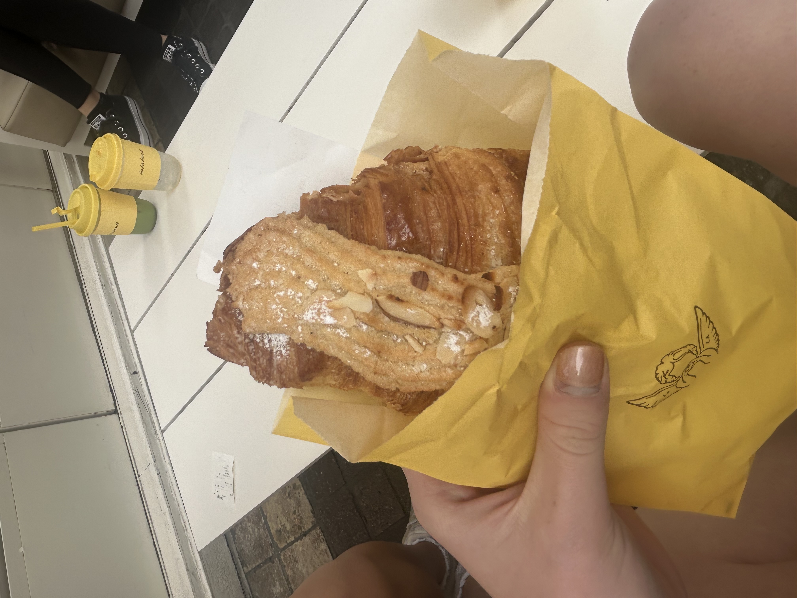
Phenomenal. Absolutely phenomenal. The best crossaint I've ever had.

Phenomenal. Absolutely phenomenal. The best crossaint I've ever had.
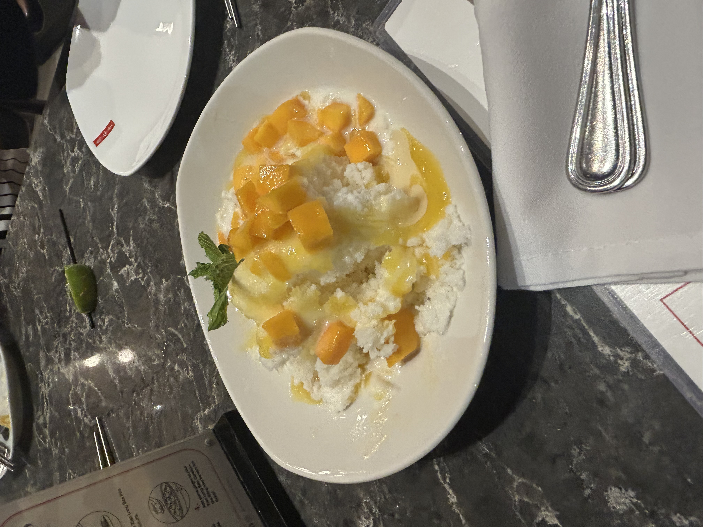
This was a very interesting dish that I was intrigued to try just from the name. I was expecting some kind of icecream but what I got was shaved ice/cream (not fully icecream) that was coconut flavored and had mango bits on top. The mango bits were the best part but when you got a good bite it was overall pretty good. The ice/cream by itself was not very good though... 7.8/10.
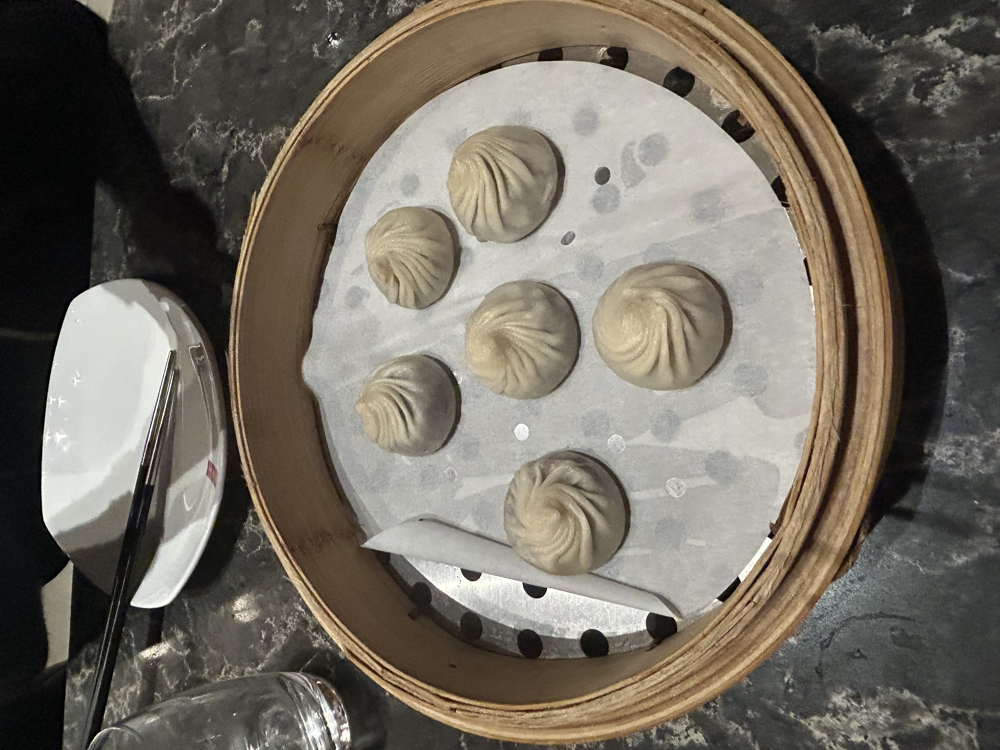
These were absolutely fantastic, I highly reccomend. Not only was the chocolate sauce incredible but the combination of the outer layer of the dumpling and the sauce was very satisfying. The only thing about this dish I did not enjoyed was the salted cream sauce on the side but it was avoidable. Overall 8.6/10.
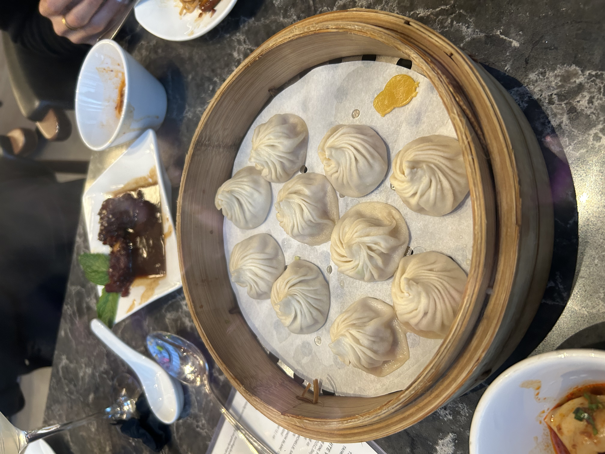
I really did not like these but they are a customer favorite so maybe I was missing something. The taste of the "soup" inside the dumpling was metallic and reminded me of the taste of chicken gone bad. Everyone else at the table enjoyed them but I will never order this again. 0/10.
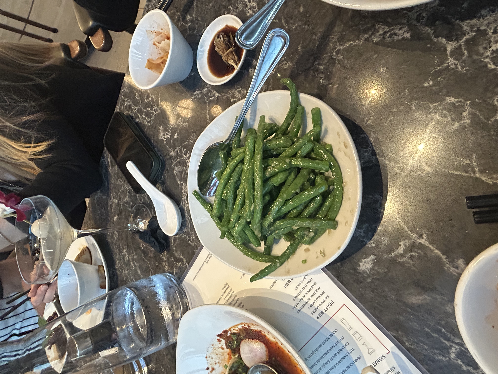
The beans from DTF met my expectations but were nothing more than well done garlic green beans. There is not anything special to say about them. I would eat these again but maybe would nto order them again for their price. 7/10.
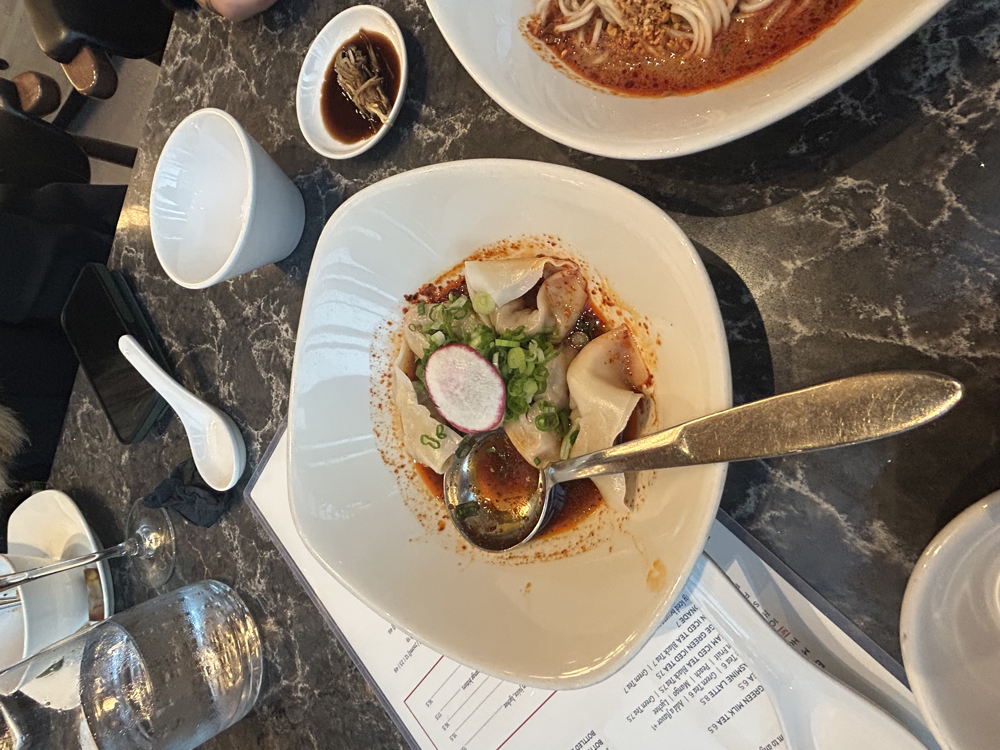
These were the best dumpling type of dish I had at DTF and I would also order these again. These also had a kick, which in this case made me want to go back for more. I really loved the shape of the wonton and the outside part was very nice. 8.9/10
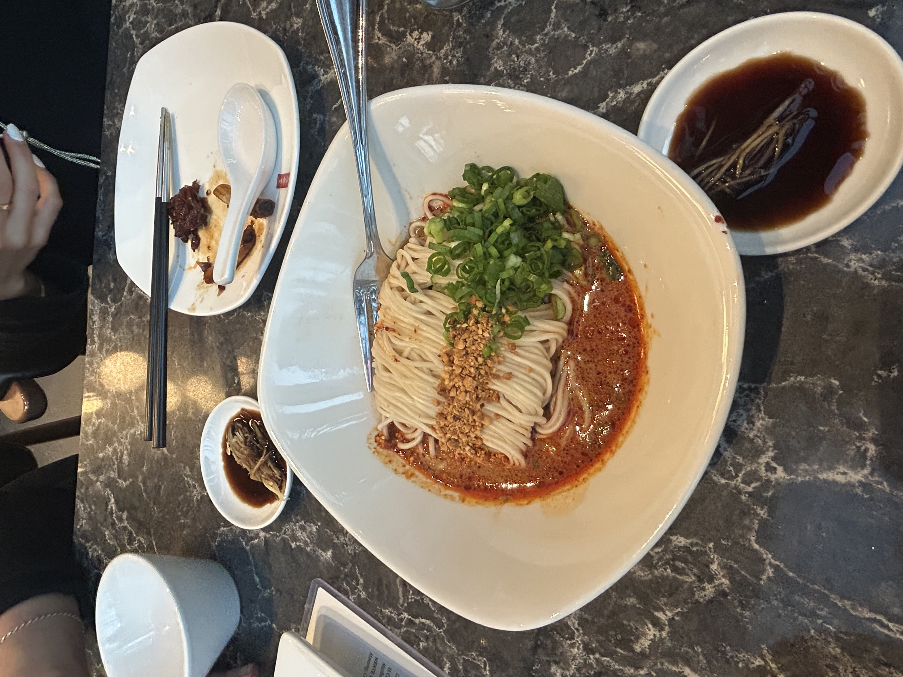
Wow these were good I am reminising. I very much enjoyed the peanut flavor and they were actually quite spciy but that gave it a nice kick. You had to first mix on/in the sauce, which is what really made the noodles taste exquisite. 9.1/10.
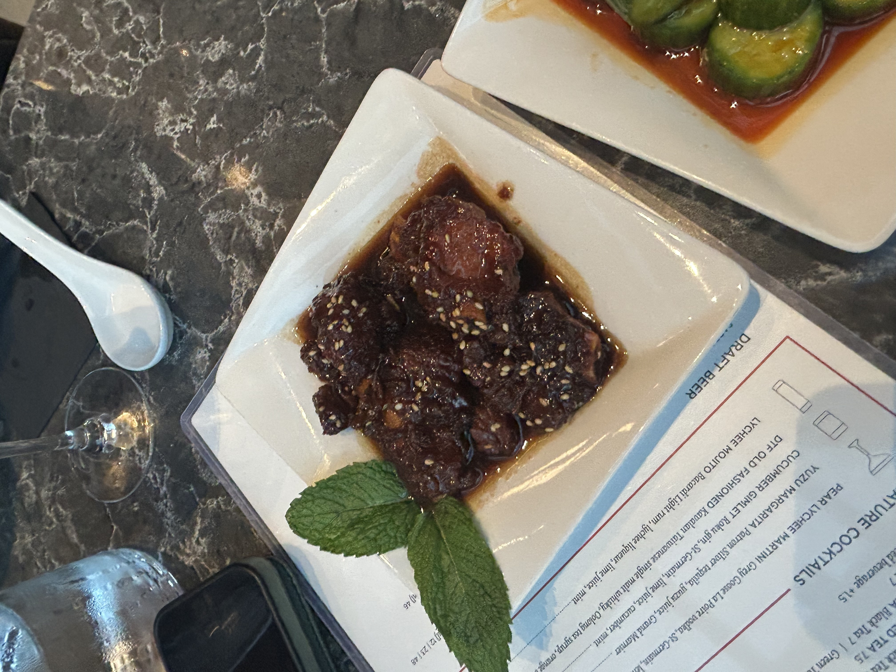
These were the best meat I had at Din Tai Fung and i would happily get these again. The only issue I have with these is that the bone is sometimes hard to pick around but that was only for a couple of them. Otherwise this was amazing: perfectly salted, chewy, and flavorful. 8.9/10.
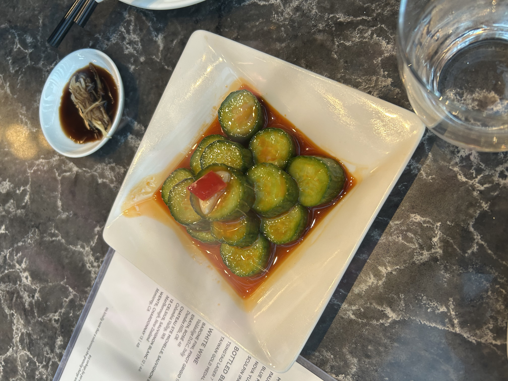
We ordered this because it just looks so good and refreshing, doesn't it? I had the majority of this dish out of everyone at the table and that is honestly just because I love cucumbers because there isn't really anything special about this dish. I would get it again but I don't even think it is worth the money so I would not reccomend this because I think you can make it at home. 6/10.
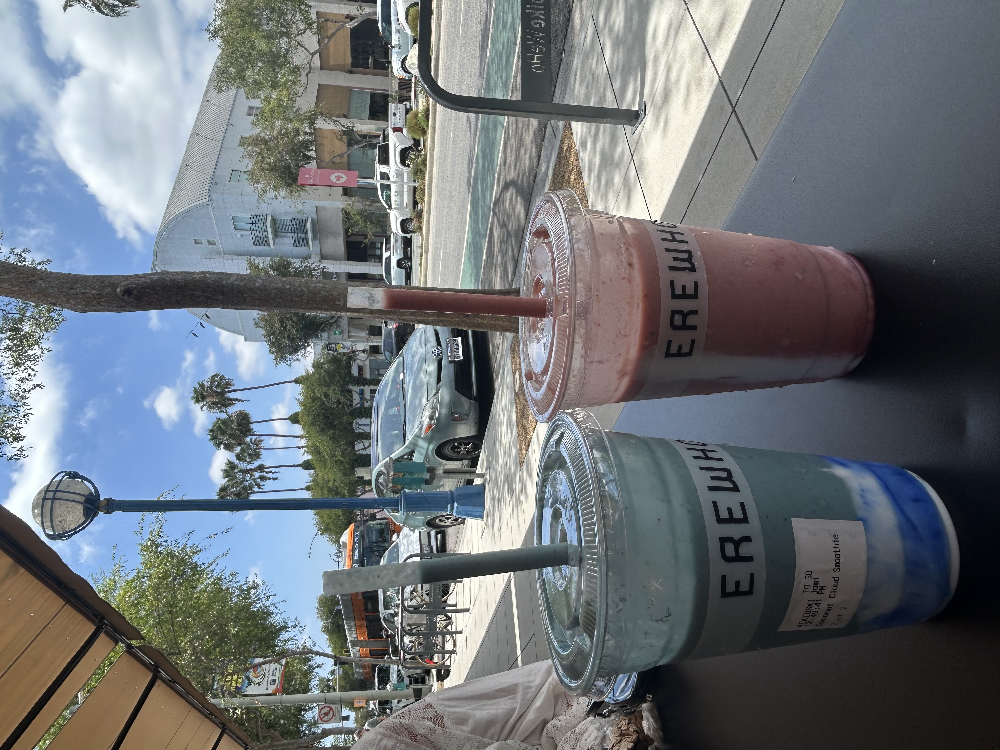
If I thought the buffalo cauliflour exceeded my expectations, these two beautiful drinks truly exceeded my expectations. While the Bieber smoothie was a little too sweet for my liking it was very tasty and is reminiscent of a childhood strawberry smoothie except 10x healthier. Both smoothies are a beauty to look at and now I understand the raive over the Erewhon smoothies. What really blew me away was the Coconut Cloud Smoothie. With the blue spirulina to give the smoothie its vibrant color, it looked like and tasted like the ocean.
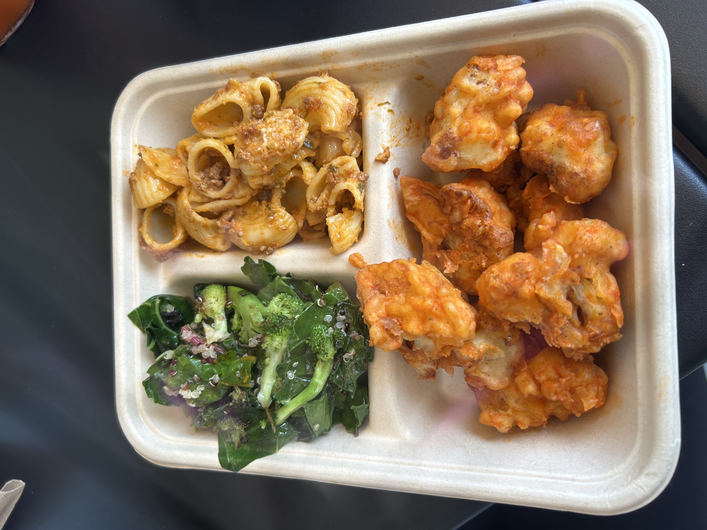
I enjoyed this combo plate much more than I enjoyed the Sushi Sandwhich. The salad was probably the worst dish since it was dry and the ingredients did not seem to go well with eachother so when you put a bite into your mouth it felt like each flavor was fighting with eachother. The buffalo cauliflower exceeded my expectations and truly was a delight each bite. This is a create alternative to buffalo chicken and I would highly reccomend this dish. The pasta bolognese was the best part and I almost ate all of it. Normally I don't like bolognese but each bite was thick and very filling but also made you want to come back for more. Salad: 4/10 BC: 9/10 Bolognese: 9.7/10
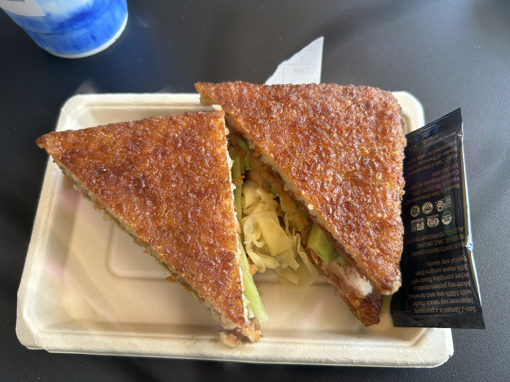
Did you know that "Erewhon" spelled backwards is nowhere? I think it is supposed to be for "La or nowhere" or something like that. Anyway, I was very interested in this sushi sandwhich from erewhon that I have seen all over my TikTok for you page so I had to give it a try. The first bite was very good as it had the most soy sauce on it but the more and more bites I had without the same amount of soy sauce it got worse and worse. But, the avocado and the salmon and I think tuna in the sandwhich were very high quality. But, the crispy rice could have been crispier because it needed more of a crunch. This could have just been because it was not very recently made. Overall I give this unique sandwhich a 7.4/10.
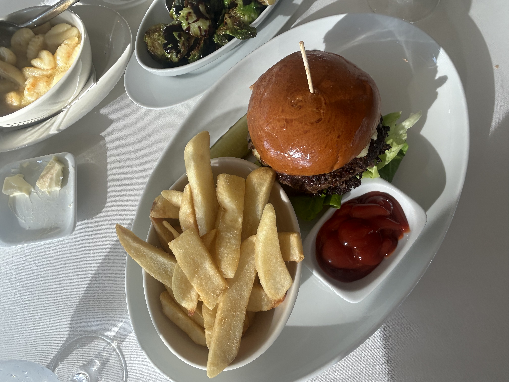
This burger was AMAZING. The lettuce and tomatoes were fresh and the cheese tasted just right. We asked for the burger to be done medium and that was definetly the right decision because it was evenly cooked. The buns were crisp as you can see in this photo and I would give this a 10/10.
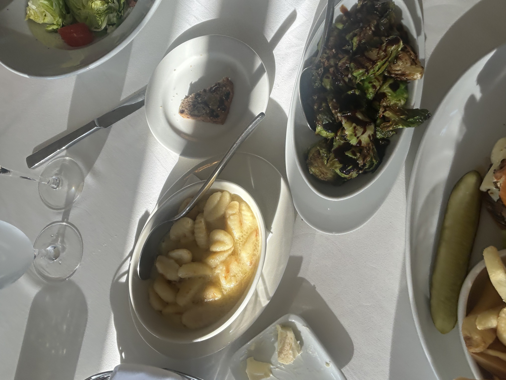
The gnocchi was a bit watery and as my mom said it "melted in your mouth" but in my opinion the melting was not that pleasant. It was more like the gnocchi was so soft that there was nothing really to chew. The brussel sprouts were very good though as they were seasoned well and sweetly. I wish the brussel sprouts also had a little more crunch but otherwise 8/10. I give the gnocchi a 3/10.
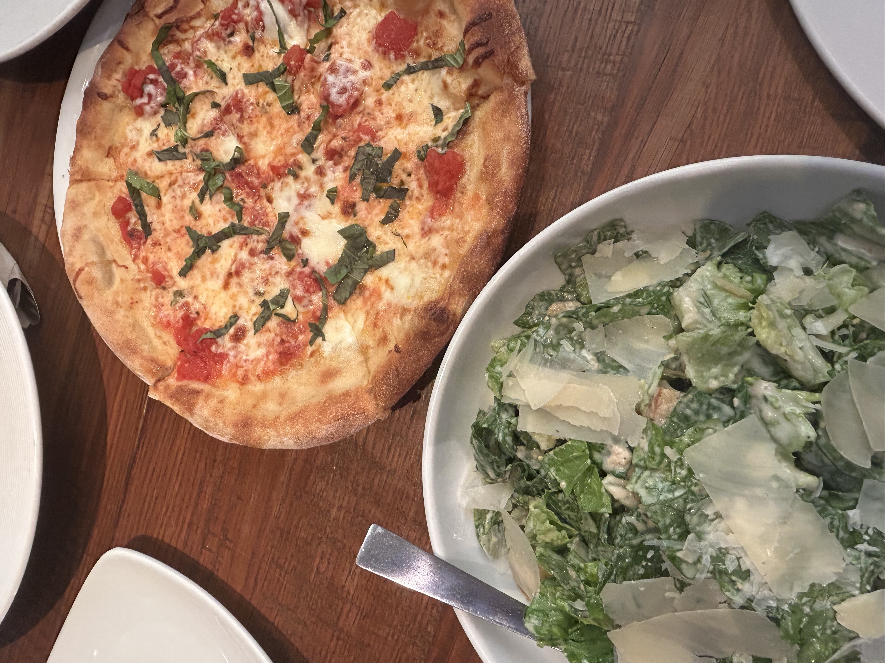
The combination of the two are what everyone needs in their life. The crust of the pizza was perfectly crisp and there is always the right amount of cheese at CPK, which is hard to find. The caeser salad alone is very thick and heavy but when you put it on top of each bite of your maragrita pizza, it's divine. 9.8/10
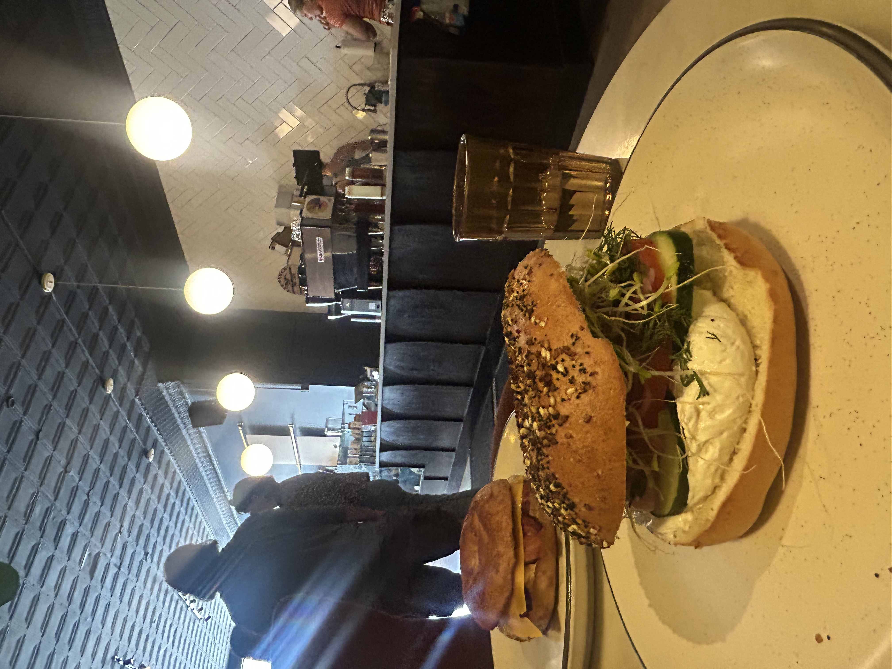
Everything bagel with cream cheese and greens and tomato’s and pickled onions. Honestly, if this had included lox it would have been perfect but without lox it was mid. The cream cheese was overpowering so it mainly tasted only like cream cheese. The greens were a nice touch but didn’t really add anything. I would give this bagel a 7/10.
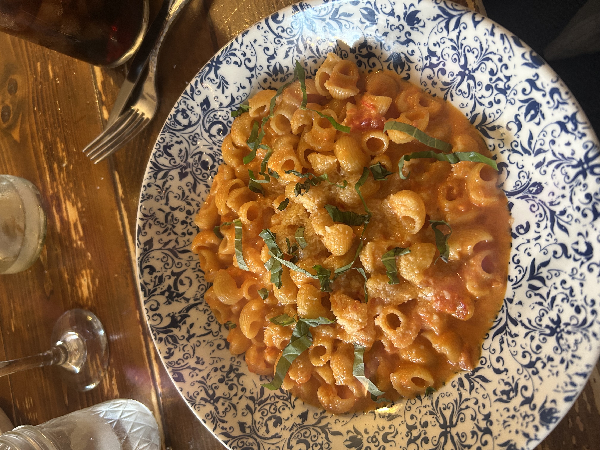
While the truffle fries and caeser salad were amazing, the vodka pasta was disappointing. I was excited to get this dish and split it with my brother because I have had it in the past and it has been great. But, this time the sauce was watery and literally liquid when it should be thick and creamy. The pasta was barely coated in the sauce which made it taste like I was just eating pasta with red sauce. When I got a good bite it was an 8/10 but otherwise as a whole this was a 6/10. Sadness.
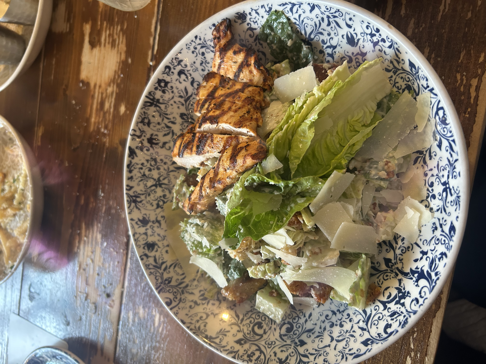
The Hampton Social is really hitting it off with their dishes because I have no notes for this caeser salad. The chicken was perfectly grilled and easy to cut. What really makes a caeser great and not just good is when there is extra Parmesan on top because that is what the people want to see. 9.8/10.
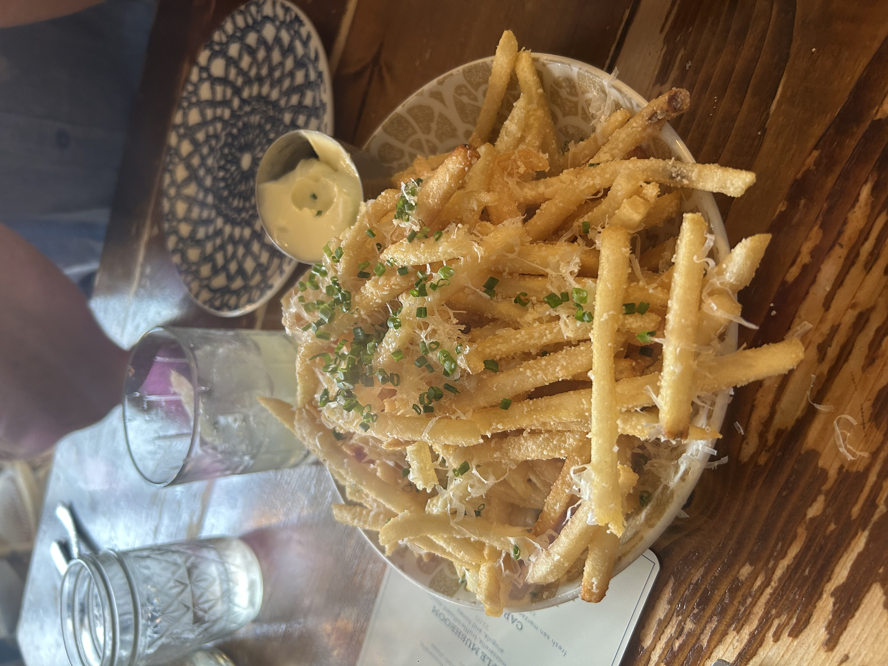
The truffle fries from The Hampton Social are the best truffle fries I have ever had. The amount of Parmesan on the fries and the aioli on the side are what dictate how good the fries are going to be. There was plenty Parmesan on top of the fries and then when you started to get deeper into the bowl, there was even more Parmesan on each fry underneath. The fries were crisp, salty and small so it did not feel like you were putting much into your mouth. The only downside of eating almost a whole bowl of truffle fries is that you are eating straight potato and need to go on a walk after dinner, which is exactly what I did. Overall, a 9.7/10.
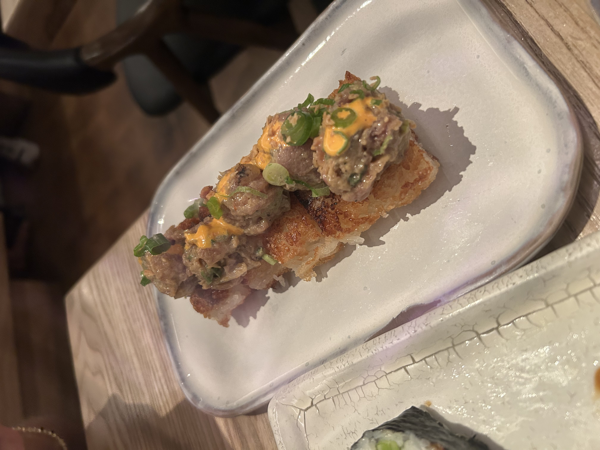
The love of my life is spicy tuna crispy rice. Before trying this for the first time I went in knowing that there is an abundance of hype around the spicy tuna crispy rice from sushi San. So, my expectations were high and they did not disappoint in the slightest bit. The crispy rice is a perfect texture and always well cooked even if a little burnt. The tuna on top, mixed with spicy mayo, truffle pearl onions, sesame seeds and green onion, is a perfect level of spice. The texture is also great, the tuna kind of melts in your mouth. The sauce on top is impeccable and after you have your first one, which I usually do in 2-3 bites, I always come back wanting more. Consistently a 10/10.
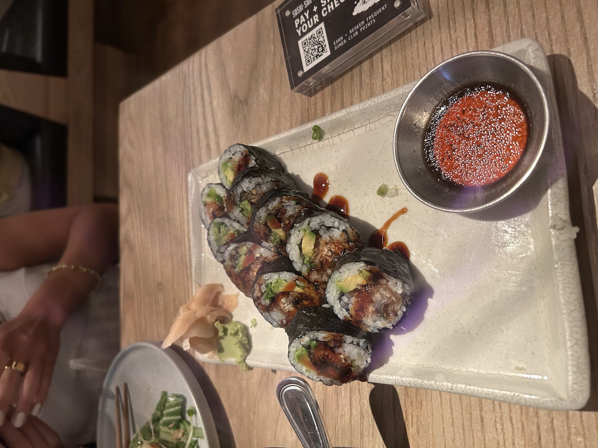
The kabayaki eel is my new favorite roll to get at sushi San. Being that I had never tried eel before I was scared to put one in my mouth. But, when Mia told me that it was really good after she had taken a bite, I knew that I had to try it since I trust Mia’s taste buds. It was great. The roll had a crunch to it coming from the eel and it was perfectly salty. I had to not think too much about how I was eating eel but otherwise the experience was wonderful. 9.8/10
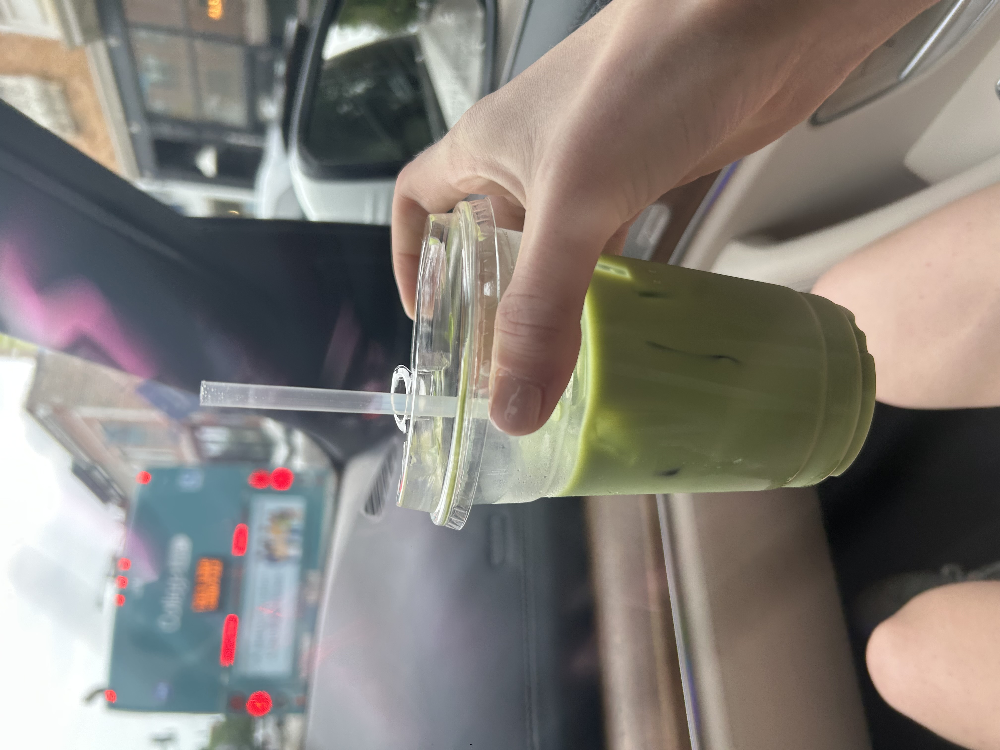
At first I was skeptical because I forgot to order my matcha with vanilla, as I usually do. So, I expected a grass-tasting matcha like some of the other matchas I have tried in the past. But, when I took my first sip I realized that my expectations were way off; the matcha was perfect. The oatmilk tasted just right and the matcha truly tasted like how matcha is supposed to taste like: fresh, green, and delictable. I give this matcha a sold 10/10 with no notes.
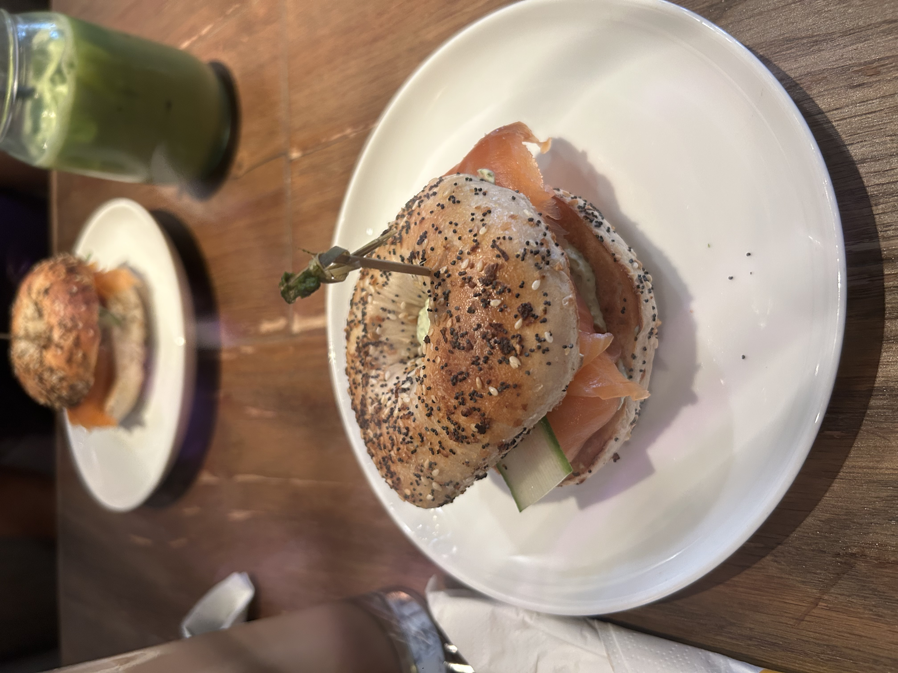
The gravlax bagel is always a hit everytime I visit cupitol. The everything bagel is perfectly toasted and has the correct ratio of seeds: sesame, poppy, onion flakes and garlic flakes. I do wish there was more herb cream cheese, which I always find myself scraping the plate to get more of. But, the house-cured salmon seriously makes up for the lack of cream cheese with its delicious taste. Overall I would give this bagel a 9.6.